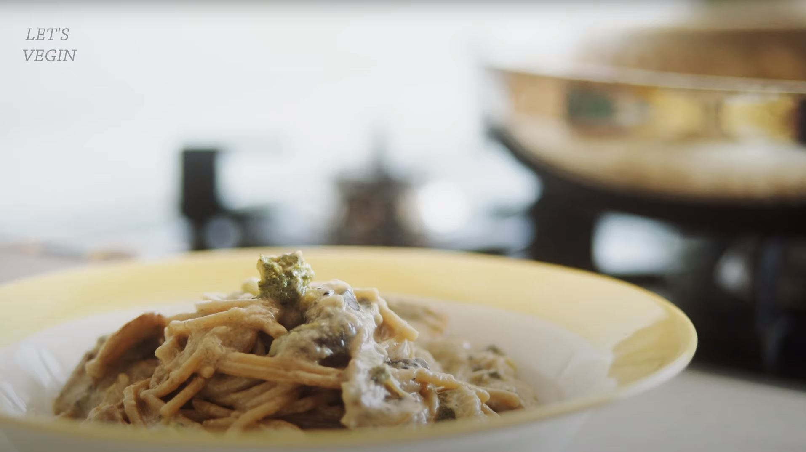

< Back to Home
아무도 죽지 않는 두유크림파스타 레시피
레시피 참고
두유크림파스타 재료
스파게티면(100g), 양송이 3개 또는 새송이 버섯 1개, 양파 1/2개, 마늘 2개, 브로콜리 약간,
매일두유(설탕무첨가) 1팩, 페페론치노 또는 청양고추 약간, 올리브유, 소금, 후추, 물 500ml

만드는 방법
1. 마늘, 버섯, 양파 등 준비한 야채들을 슬라이스 하고 브로콜리는 한 입 크기로 잘라준다.
2. 팬에 올리브유를 두르고 마늘과 페페론치노 또는 청양고추를 약간 다져넣고 볶아준다.
3. 마늘이 노릇하게 익으면 야채들을 넣고 소금과 후추 간을 한 후 볶아준다.
4. 두유 1팩과 물 500ml, 스파게티면을 넣고 소금과 후추를 한 꼬집씩 더 넣어준 후 중불로 끓인다.
5. 10분 ~ 12분 정도 저으면서 끓여준다.
6. 완성된 파스타를 그릇에 담는다.
< Back to previous